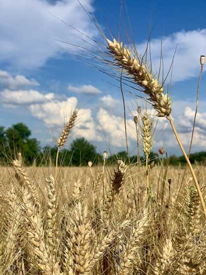
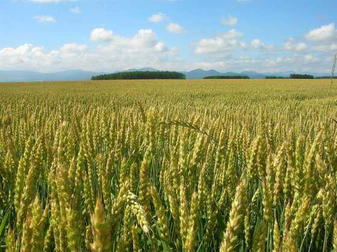
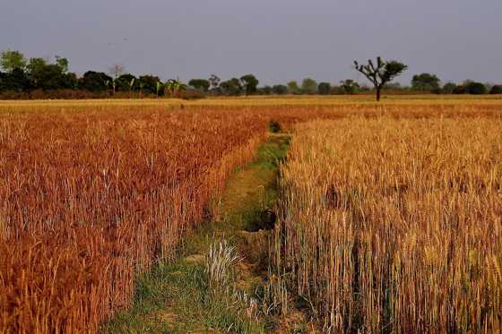

愛知県阿久比町・日曜日だけのパン屋
週に一度、日曜日に開く
小さなパン屋。
うたパン工房は、阿久比町で日曜日だけ店を開くパン屋さんです。
お店のこと
一週間のなかの、日曜日のお楽しみ。
うたパン工房は、愛知県知多郡阿久比町にあるパン屋さんです。Instagramのプロフィールによると、営業は日曜日のみ、9:00〜15:00。週に一日だけ、パンが並びます。
来店者の投稿には、「小さなお店」「お店の方が話しかけてくださり、とても親切」といった声があり、営業日にはお客さんで賑わっているとも紹介されています。町のイベント「あぐい結びの市」に出店した様子も、SNSで見られます。
情報源: Instagram @utapan_1023 / 食べログ / 来店者のThreads投稿 / Threads投稿(出店告知)
店名の由来やオーナーの想いは、確認できる情報が見つかっていないため載せていません。「日曜日だけ」を軸にした見出しなどの言い回しは、制作側のイメージです。



パン
日曜日に並ぶパンたち
SNSや口コミで名前の挙がっているパンです(いつも並ぶとは限りません)。
- あんフランス
- モダン焼きパン
- ジャーマンポテト
- ミニあんぱん
- クロックムッシュ
- 抹茶あんバター
- 全粒粉食パン
- 惣菜系のパン・サンドイッチ
価格・当日のラインナップ: 準備中(最新情報はInstagramをご覧ください)
下の写真はフリー素材のイメージで、店舗の実際のパンや様子ではありません。


口コミ
こんな声が届きそうです
イメージ例以下は制作側が作成したイメージで、実在のお客様の声ではありません。
[イメージ例] 日曜の朝に楽しみに通っています。小さなお店で、ほっとできます。
[イメージ例] 惣菜系のパンがいろいろあって、お昼にちょうど良かったです。
[イメージ例] お店の方が気さくで、また日曜日に行きたくなりました。
写真
日曜日の空気を、麦畑で。


アクセス
ご案内
| 所在地 | 愛知県知多郡阿久比町矢高五反田33-1 ※掲載サイトにより番地表記が異なります(食べログは28-1)。 |
|---|---|
| 営業日 | 日曜日のみ 9:00〜15:00(Instagramプロフィールより。変更の場合あり) |
| 電話 | 準備中 |
| 価格 | 準備中 |
| SNS | Instagram @utapan_1023 |